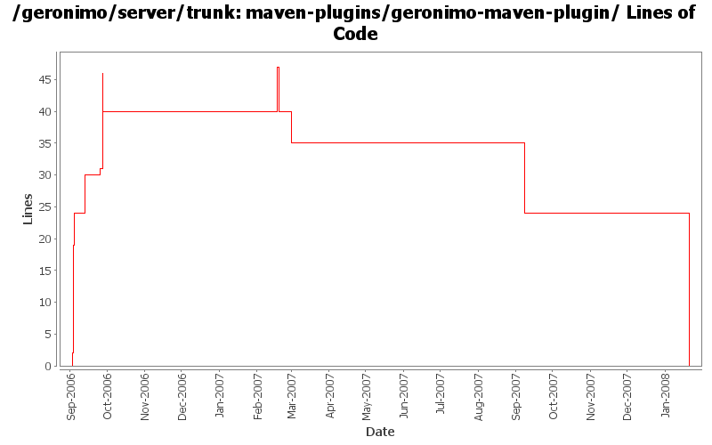

[root]/maven-plugins/geronimo-maven-plugin
 src
(0 files, 0 lines)
src
(0 files, 0 lines)
 main
(0 files, 0 lines)
main
(0 files, 0 lines)
 java
(0 files, 0 lines)
java
(0 files, 0 lines)
 org
(0 files, 0 lines)
org
(0 files, 0 lines)
 apache
(0 files, 0 lines)
apache
(0 files, 0 lines)
 geronimo
(0 files, 0 lines)
geronimo
(0 files, 0 lines)
 mavenplugins
(0 files, 0 lines)
mavenplugins
(0 files, 0 lines)
 geronimo
(0 files, 0 lines)
geronimo
(0 files, 0 lines)
 module
(0 files, 0 lines)
module
(0 files, 0 lines)
 reporting
(0 files, 0 lines)
reporting
(0 files, 0 lines)
 server
(0 files, 0 lines)
server
(0 files, 0 lines)
 server
(0 files, 0 lines)
server
(0 files, 0 lines)
 resources
(0 files, 0 lines)
resources
(0 files, 0 lines)
 site
(0 files, 0 lines)
site
(0 files, 0 lines)
 apt
(0 files, 0 lines)
apt
(0 files, 0 lines)
 usage
(0 files, 0 lines)
usage
(0 files, 0 lines)

| Author | Changes | Lines of Code | Lines per Change |
|---|---|---|---|
| Totals | 22 (100.0%) | 76 (100.0%) | 3.4 |
| jdillon | 16 (72.7%) | 66 (86.8%) | 4.1 |
| gdamour | 2 (9.1%) | 7 (9.2%) | 3.5 |
| prasad | 1 (4.5%) | 1 (1.3%) | 1.0 |
| hogstrom | 1 (4.5%) | 1 (1.3%) | 1.0 |
| dain | 1 (4.5%) | 1 (1.3%) | 1.0 |
| akulshreshtha | 1 (4.5%) | 0 (0.0%) | 0.0 |
(GERONIMO-3771) Moved maven-plugins/* to buildsupport/*, updated groupId to org.apache.geronimo.buildsupport
0 lines of code changed in 3 files:
Dropped configuration of the goalPrefix for plugins, this is not needed since we follow one of the 2 supported automated styles for detection
Drop the javadoc reporting muck, use that from the top-level pom
Make sure we use the latest plugin plugin for the reports
0 lines of code changed in 1 file:
* updated copyright date to 2007
1 lines of code changed in 1 file:
Changed trunk to 2.1-SNAPSHOT
1 lines of code changed in 1 file:
GERONIMO-2907 Remove dependency on mx4j
0 lines of code changed in 1 file:
As pointed out by Jason D., we do no need to have the jsr88 deployment driver
jar as a dependency.
0 lines of code changed in 1 file:
Second attempt to change the way the online/offline deployers and the JSR88
deployment driver work. The first attempt was breaking the TCK amd the
eclipse plugin.
Online deployer, i.e. deployer.jar, boots a Kernel to load its dependencies,
e.g. geronimo-deploy-tool, and registers the available ModuleConfigurers with
the DeploymentManager.
ModuleConfigurers to be registered are loaded by the persistent configuration
list jsr88-configurer-config.xml.
In the case of an offline deployment, the online deployer starts the
offline-deployer configuration within the same Kernel. In turn, the
offline-deployer configuration starts a list of configurations to register
the available module builders.
Add a log4j configuration for the online deployer.
DeploymentFactoryBootstrapper is the new JSR88 deployment driver. It boots a
kernel; starts the configuration list jsr88-configurer-config.xml; retrieves
the "actual" DeploymentFactory implementation from the kernel; and delegates
to this retrieved imoplementation.
The JSR88 JAR driver is now named jsr88-deploymentfactory.jar.
This fixes:
* GERONIMO-2794 - Improve online deployer to register ModuleConfigurers from the repository; and
* GERONIMO-2767 - Minimize side effects of the offline deployer
7 lines of code changed in 1 file:
Changed version to 2.0-SNAPSHOT
1 lines of code changed in 1 file:
Using ${version} instead of ${pom.version} in a feeble attempt to get around ${pom.version} changing to its timestamp version for SNAPSHOT artifacts
2 lines of code changed in 1 file:
Drop unused depend
0 lines of code changed in 1 file:
(GERONIMO-2419) Enabling logging for start-server, hooked up reporters API for exception handling, Adding a Surefire reporter which will output reports in a surefire manner, so we can re-use the surefire html report fluff to visualize
Massaged from reporters.patch by Prasad
16 lines of code changed in 1 file:
(GERONIMO-2426) Site docs for module usage
2 lines of code changed in 1 file:
(GERONIMO-2359) Applied modified versions of patches submitted by Prasad (thanks)
Moved all server related mojos to the o.a.g.m.g.server package
Added all new module mojos to the o.a.g.m.g.module package
Renamed install, start and stop goals to install-assembly, start-server and stop-server
Added aliases for install, start, stop that point to install-assembly, start-server, stop-server
Adding (augmented from patches) start-module, stop-module, deploy-module and undeply-module
Added aliases deploy and undeploy that point to deploy-module and undeply-module
Added list-modules goal to show what modules are running and non-running
Module operations show tree-like view of targetId's when available
6 lines of code changed in 1 file:
Update to use new license headers
20 lines of code changed in 2 files:
Adding ServerProxy helper to facilitate checking if the server is loaded
Unfortunately I was not able to figure out how to do this with JMX alone, so we need to depend on geronimo-kernel to pick up classes
14 lines of code changed in 1 file:
Update site docs
4 lines of code changed in 1 file:
Rename server plugin to geronimo plugin
2 lines of code changed in 3 files: